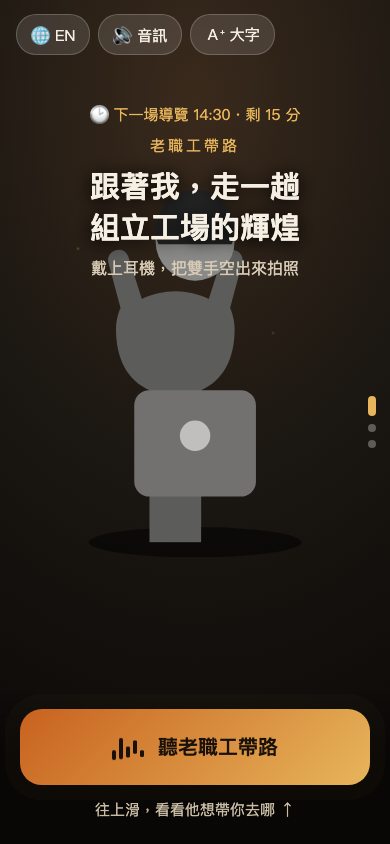
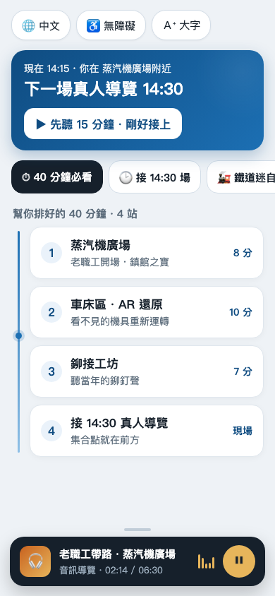
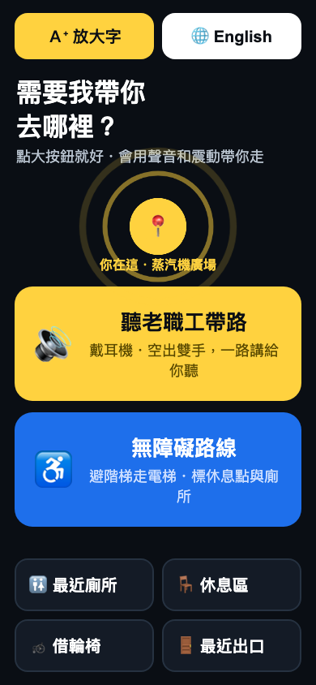

3 秒看出是「老職工帶你走」，不是展覽海報
主操作在螢幕下 1/3，單手可達
波形/呼吸動態的播放鍵，一鍵開始
高對比、大字、觸控目標夠大、多語
自動推「下一場 14:30／40 分鐘必看」
把「下一步」放進底部卡、路線上有流動光點——最適合「帶路」的指引感。→ 用在 V2 的路線流光線。
播放鍵周圍聲波跳動，直覺「戴耳機就能聽」。→ 用在 V1 呼吸音波鍵、V2 音訊膠囊。
中心向外淡雅擴散，靠動態聚焦、免讀繁字。→ 用在 V3「你在這」定位雷達。



它們不是三個相似方案挑好看的，而是刻意打中 PRD 三種主要訪客的三條正交軸線，各自在自己那條做到最強；合起來讓你依現場優先序挑，而非賭單一風格。
| 版本 | 主打軸線 | 對應 PRD 族群 | 它最強的一條標準 |
|---|---|---|---|
| V1 職人記憶 | 情感 / 沉浸 | 一般客、想被故事打動的人 | ① 一眼是「老職工帶路」 |
| V2 時光旅人 | 理性 / 效率 | 走馬看花客、趕場、鐵道迷 | ⑤ 情境時間「接 14:30」 |
| V3 隨身指引 | 無障礙 / 安全 | 年長、行動不便、外國旅客 | ④ 無障礙大字高對比 |
三版共用同一套「帶路」語彙與音訊優先原則（同一流程、可調深度/語言/模式），符合 PRD「不另設分眾導覽」。下一步可挑一版為主幹、吸收另兩版的最強元件（如 V1 情感首屏 + V2 情境時間 + V3 無障礙切換）。